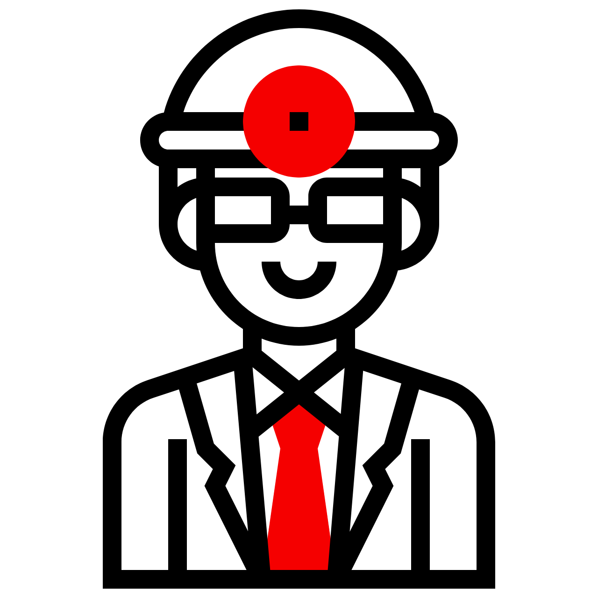
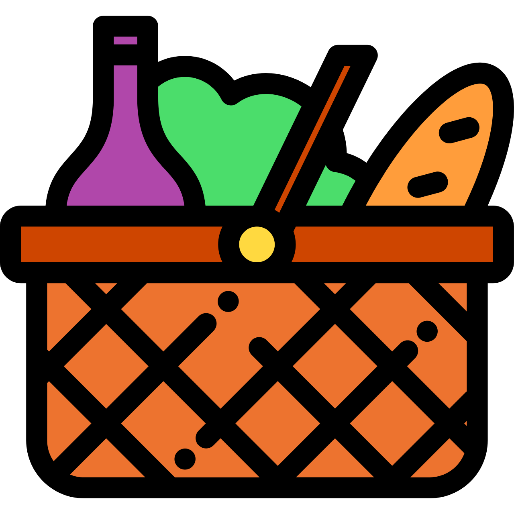

Aqui no ECONSciente, você encontrará informações e dicas práticas de armazenamento de frutas, legumes e
verduras, e para testar seus conhecimentos participe dos nossos quizzes e veja o quanto você realmente
sabe. Nosso objetivo é conscientizar e educar a população sobre a importância de reduzir o desperdício
de alimentos, acreditamos que pequenas mudanças em nossos hábitos diários podem ter um grande impacto.
O que pretendemos?
Nosso propósito é incentivar o consumo consciente e ajudar a reduzir o desperdício de alimentos. Para
isso, reunimos informações essenciais sobre como manusear, armazenar, aproveitar e descartar frutas,
legumes e verduras. Visamos resolver a fragmentação de dados espalhados pela internet, oferecendo
conteúdos de fácil acesso e compreensão. Com isso, você pode aprender sobre técnicas de preservação,
condições ideais de armazenamento, como identificar alimentos estragados, aproveitar ao máximo cada
produto e descartar de forma consciente. Além disso, incluimos um quiz interativo que permite você
testar e aprimorar os seus conhecimentos de uma forma divertida.
Veja um pouco sobre
MAÇÃ
A maçã contém vitamina C, que fortalece o sistema imunológico e ajuda na digestão.
PERA
A pera tem uma textura macia e é rica em fibras. Ela é cultivada há mais de 3.000 anos.
BANANA
A banana é rica em potássio e ajuda na função muscular. Ela é cultivada em todo o mundo.
KIWI
O kiwi é uma excelente fonte de vitamina C, ajudando a fortalecer o sistema imunológico.
MANGA
A manga é rica em antioxidantes e vitamina A, beneficiando a saúde da pele e visão.
MELANCIA
A melancia é composta por 90% de água e é refrescante. Ela tem origens na África.
PÊSSEGO
O pêssego é rico em vitaminas A e C e tem origem na China.
ABACAXI
O abacaxi é rico em bromelina, uma enzima que ajuda na digestão e alivia inflamações.
LARANJA
A laranja é rica em vitamina C e pode ser usada para extrair óleos essenciais de sua casca.
PEPINO
O pepino é 95% água, ajudando na hidratação. Ele pertence à família das cucurbitáceas.
ABÓBORA
A abóbora é rica em vitamina A e antioxidantes, além de pertencer à família das cucurbitáceas.
BATATA
A batata é rica em carboidratos e uma das hortaliças mais consumidas no mundo.
CEBOLA
A cebola é rica em antioxidantes e compostos que ajudam a fortalecer o sistema imunológico.
BETERRABA
A beterraba é rica em ferro e antioxidantes, ajudando a melhorar a circulação sanguínea.
ASPARGO
O aspargo é rico em vitaminas A, C e K, além de ser um excelente aliado para a saúde digestiva.
RABANETE
O rabanete é rico em vitamina C e ajuda na digestão e desintoxicação.
ERVILHA
A ervilha é rica em proteínas, fibras e vitaminas, sendo uma ótima opção para dietas equilibradas.
BERINJELA
A berinjela é rica em fibras e antioxidantes, ajudando no controle do colesterol.
ALFACE
A alface é rica em água e fibras, ajudando na digestão e na hidratação do corpo.
COUVE
A couve é rica em vitaminas A, C e K, além de ser excelente para a saúde óssea e digestiva.
ESPINAFRE
O espinafre é rico em ferro e antioxidantes, fortalecendo o sistema imunológico.
BRÓCOLIS
O brócolis é rico em vitamina C e antioxidantes, bom para o coração e imunidade.
AGRIÃO
O agrião é rico em vitamina C e antioxidantes, beneficiando a pele e imunidade.
REPOLHO
O repolho é rico em fibras e vitamina C, ajudando na digestão e imunidade.
ACELGA
A acelga é rica em vitaminas A, C e K, além de cálcio e ferro, ajudando os ossos.
ORÉGANO
O orégano tem antioxidantes e propriedades anti-inflamatórias, ajudando na digestão.
COENTRO
O coentro é rico em antioxidantes e vitaminas A e C, auxiliando na digestão e detox.
Benefícios que nós proporcionamos
Preservação de nutrientes e sabor
Armazenar e conservar os alimentos de forma adequada evita a perda de nutrientes e mantém o sabor
natural dos produtos, promovendo uma alimentação mais nutritiva e saborosa.

Diminuição dos custos de saúde
Uma dieta rica em frutas e verduras pode reduzir gastos com saúde a longo prazo, já que uma
alimentação saudável previne doenças e diminui despesas com tratamentos.

Prolongamento da vida útil dos alimentos
Com orientações sobre armazenamento correto, o projeto ajuda as pessoas a manterem frutas, legumes e
verduras frescos por mais tempo, reduzindo a necessidade de compras frequentes e o desperdício
desnecessário.
Economia
Ao adotar práticas sustentáveis, as famílias podem economizar em suas compras, aproveitando melhor os
alimentos e reduzindo a necessidade de reposição constante.
Redução do impacto ambiental do descarte
Orientações sobre o descarte sustentável ajudam a diminuir a quantidade de lixo orgânico enviada para
aterros e incentivam a compostagem caseira, o que reduz a emissão de gases de efeito estufa e
enriquece o solo.
Menor emissão de gases do efeito estufa
Com a redução do desperdício de alimentos, há uma diminuição na produção de resíduos orgânicos que,
quando decompostos, emitem gases de efeito estufa. O projeto contribui para minimizar esses impactos
ambientais.